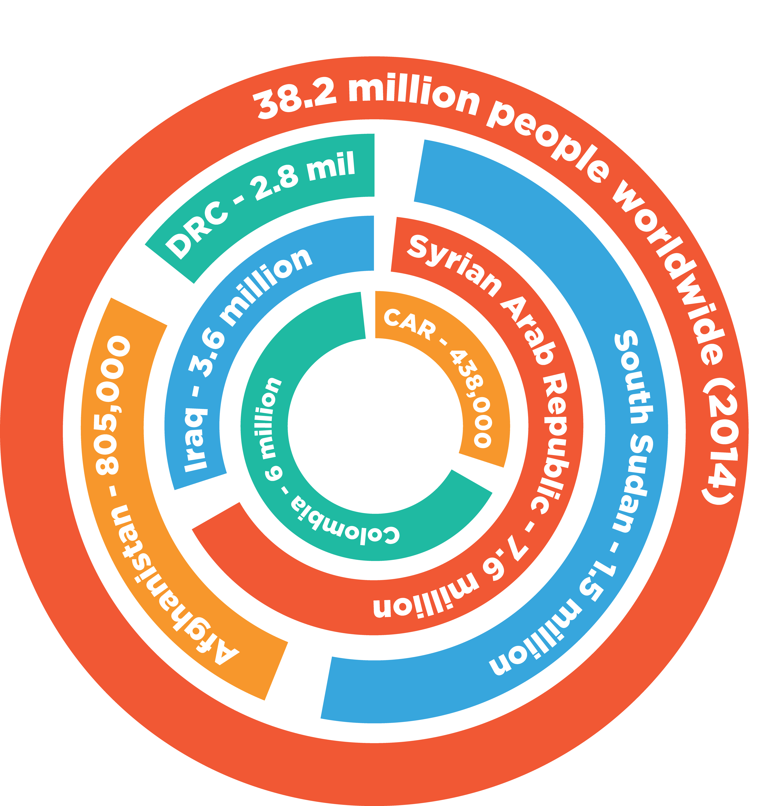
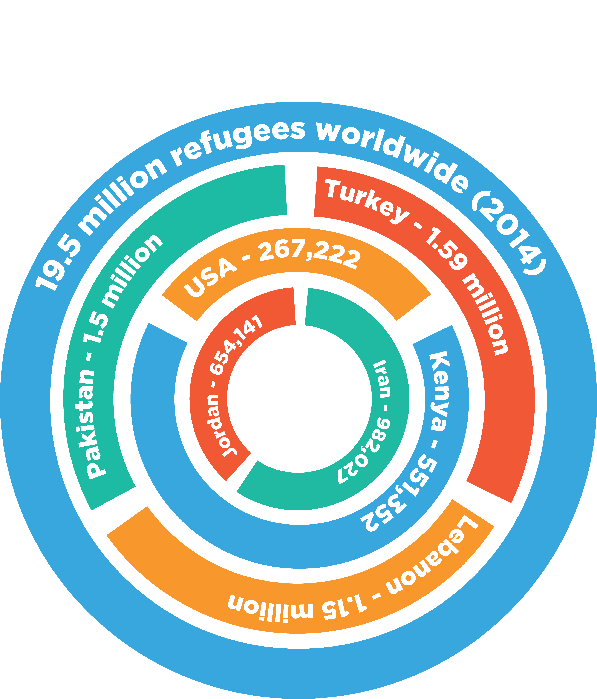

Forced Migration in the 21st Century
by Katie Saviano and MT Snyder — Posted in Features on 2 / 22 / 16
Because Syrian refugees are fleeing to wealthy European countries—countries that are centers of global power—there is a larger incentive for their immediate needs to be addressed by the international community.
The Syrian refugee crisis is not occurring in isolation.
Western media has a habit of speaking about refugees and the conflicts that create them in isolated terms: “the European refugee crisis,” “the Syrian refugee crisis,“ the Jordanian refugee crisis.”
These crises are spoken about as if they are not connected—as if displacement is not a product of our current world order and a reality for one in seven people alive today, according to the International Organization for Migration. However, this representation is inaccurate. The Western world posits the Syrian refugee crisis as “raging,” broadcasting “Warning[s] on New Wave of Syrian Refugees” and even calling for “a new Marshall Plan.” This narrative prioritizes Syrian refugees, leaving out other refugee groups that the international aid economy does not deem valuable enough for the same level of assistance. As the borders set by colonial powers in the Middle East begin to crumble, regional governments move from serving as safe havens to leveraging displaced people’s vulnerability for their own gain, particularly in the bid for foreign aid.
The violent civil war in Syria has resulted in 4.6 million refugees, making the Syrian refugee crisis the largest refugee crisis since World War II. The majority of these refugees are concentrated in the Middle East; however, approximately 10 percent of these refugees have fled to Europe. While Syrians had previously blended in as one of many refugee waves sweeping across the Middle East, once they began to seek refuge in Western countries the conflict gained international attention. In Syria, the escalating civil war has made civilians direct targets of the conflict, while refugee camps across the region have become overwhelmed by the magnitude of the exodus. Driven to desperation, refugees are seeking out other options, notably the perilous five-mile journey by water from Turkey to Greece.
Because Syrian refugees are fleeing to wealthy European countries—countries that are centers of global power—there is a larger incentive for their immediate needs to be addressed by the international community. In an interview with Robert Ward, PRM Regional Refugee Coordinator for the US State Department, Ward told the Tufts Observer, “The international community is paying more attention to Syria because it’s a lot easier to ignore refugees in Dadaab [largest refugee camp in the world, located in Kenya] because those refugees aren’t walking into Europe.” Other refugee groups have less media coverage and less aid allocated to them because they are not outside any white Westerner’s front door. As Abuzar Royesh, a senior at Tufts who was displaced from Afghanistan as a child, noted, “Europe is not the place that has the most refugees. The refugee crisis is much bigger in Turkey, in Jordan, in Lebanon, in a lot of these countries. So why did it become such a huge deal now that the West is dealing with these issues?” Only once this migration to Europe began did the Western media publicize the statistics and print the pictures that are now constant news.
The Syrian refugee crisis is not occurring in isolation. In fact, the Syrian Civil War forcing Syrians to flee their homes is a result of European imperialism and interference. When the British and the French colonized the Middle East, they established borders that did not reflect the ethnic lines or geography of the region. This has led to sectarian violence and ethnic tensions as borders were drawn in a way to best benefit the colonial powers economically. According to Dr. Curt Rhodes, International Director of Questscope, an NGO based in Amman, the civil war in Syria shows “...the disruption of a colonial struggle and a breakdown of a system that never worked.”
These forcefully imposed borders are remainders of an oppressive and exploitative colonial system. But they are not the only way that colonial powers like Great Britain and France sought to control people, land, and resources. Before the colonial period, passports were not required for travel in the Arab world. They were created as a tool to regulate movement. Furthermore, colonial powers engineered the nation-state and created a global order—whose legacy is the United Nations—to preserve and centralize power in white Western hands and allow them to direct the flow of people and resources. In the midst of this, the international aid system funded by the West has stepped into this global order for the foreseeable future to serve the needs Syrians and others who have been forcibly displaced, whose passports are now meaningless.
In addition, in a postcolonial world, borders throughout the Middle East are not fixed, but rather, ever expanding and shifting to keep out refugees. Turkey continues to tighten its border to dissuade those seeking asylum. International law states that vulnerable persons have the right to claim asylum, but if one cannot enter, one cannot claim asylum. Not only are refugees being pushed away from postcolonial powers and from Europe, they are also unable to gain recognition for their refugee status. Syrians who do make it across the Turkish border are not recognized as refugees— rather they are referred to as “guests” because Turkey only affords refugee status to those from Europe.
The problem with these terms and classifications is that they can be engineered and manipulated to exclude those who do not fit within them. Syrians seeking refugee status must appeal to the United Nations High Commissioner for Refugees (UNHCR), the only international body with the jurisdiction to grant the legal status of “refugee” on an individual basis. A refugee is defined as someone who flees a foreign country or power to escape danger or persecution. However, not all vulnerable, displaced persons are refugees. The stratification of the international aid system prioritizes those with a refugee status, as persons must have a refugee status in order to be resettled through UNHCR in a third country. This disadvantages other displaced persons, such as internally displaced persons—people who are forced to flee their homes but remain within their country’s borders. Increasingly, Internally Displaced Persons (IDPs) are uprooted by conflict. Of the 51.4 million persons deemed vulnerable by the UN in 2015, 26 million are IDPs. While IDPs are within UNHCR’s mandate, they are not the focus of resources and programs.
Furthermore, those who are granted refugee status are not all treated equally. The worth of “non-Syrian” refugees is determined by their value in the international humanitarian aid industry. Their presence can help countries receive international aid money, but not nearly close to the same levels that countries hosting Syrian refugee populations receive. Services and funds are becoming increasingly inaccessible as the international aid economy decreases the worth of non-Syrian refugees and therefore the assistance that reaches them. Tufts professor of political science Kelly Greenhill posited one answer for this occurrence: “The fact that the migrant crisis is perceived to be as significant by the Europeans as it is, is one reason why you get the international community more engaged with Syria,” she said.
According to Elena Habersky from the Collateral Repair Project, an international NGO that works with vulnerable populations in East Amman, money from donors that has been “earmarked” for Syrians is becoming more of an issue. These stipulations mean that aid organizations cannot equitably distribute their services and resources according to communities’ needs. While the majority of refugees live in urban settings, Elena noted that the majority of aid goes to camps. The unequal distribution of foreign aid weighted towards specific nationalities and locations forces NGOs like CRP to decline potential funding or lose their reputation with the local community by turning away certain groups.
In Jordan, non-Syrian refugees have contested the deprioritization of their resettlement claims and assistance as part of a larger gamble for foreign assistance. Aware of their vulnerability within the international aid system, Sudanese refugees protested for a month outside of the UNHCR in Amman until last December, when 800 Sudanese refugees were deported. Their deportation was contested, as the expulsion of persons who have the right to be recognized as refugees is a violation of the international law principle known as non-refoulement. The Jordanian government claimed that it was not committing refoulement and that the Sudanese had entered under false medical pretenses. Yet, a UNHCR representative argued that many of the Sudanese were in fact registered in Jordan. Regardless of their official status, men, women, and children were handcuffed and put on planes back to the conflict from which they had already fled once—a refugee’s nightmare. The Jordanian government’s deportation of these Sudanese individuals sent a strong message to the international community and local refugee populations: certain refugees and their safety are more valued than others. Because these refugees are not a highly visible group, the Jordanian government faced little backlash in Western media coverage. Not only were these refugees far from making headlines, but their host government showed a clear preference for refugees with a stronger pull to willing donors in an international aid system.
In a bid to climb up this ladder of global assistance, Jordan’s Prime Minister stated that absorbing more Syrian refugees would be “very, very difficult” without additional economic aid. Just four days later, the US announced an increase in aid to Jordan from $660 million to $1 billion for the next three fiscal years. Rather than taking in refugees from a genuine desire to help, Jordan has used the over 600,000 refugees within its borders as an excuse to plead for greater humanitarian assistance, and continues to ignore the 17,000 Syrians stranded at the desert border. According to a recent New York Times article, “That new investment, in turn, could translate into jobs for Jordanians.” Regardless of how many Syrians are taken in by the state, international foreign assistance will ultimately be aimed at furthering the economic gain for Jordanian nationals. Jordan is using the Syrian refugee crisis and the attention of the Western media to gain atonement for the postcolonial cross-border conflicts throughout the Middle East.
Not only has the government been begging for foreign aid, but the Jordanian media has propagated the now widespread belief that Syrian refugees are taking Jordanian jobs. Yet, Dr. Rhodes stated, “The displacement is quite tiny. Syrians are taking small, unregulated jobs. It’s the perception of Syrians by the media.” Whether Syrians are taking jobs away or becoming the most visible recipients of international aid, they remain an entirely separate populous from the rest of the Western world, where not only their state but also their identity is taken away. There are refugees from conflicts all over the world, but currently attention and aid is not evenly distributed, instead focusing on people making their way into Europe, and othering everybody else. With this “othering,” refugees both Syrian and non-Syrian remain voiceless victims of a postcolonial world.